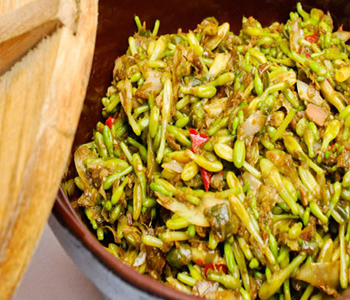

Bahan:
- 1/4 kg bungga pepaya
- 18 buah cabe rawit merah
- 3 bawang merah
- 5 bawang putih
- 1 buat tomat di iris
- 1/4 teri Medan
Cara Membuat:
- Cuci bungga pepaya, rebus sebentar.tiriskan..
- Cabe, bawang merah bawang putih di blender, tumis setengah matang masukkan tomat
- Cuci teri, masukan ke bumbu, masak sampai matang
- Masukkanbungga pepaya, cobain dulu asinnya, kalau kurang di tambah, aduk rata, Sampai meresap angkat..